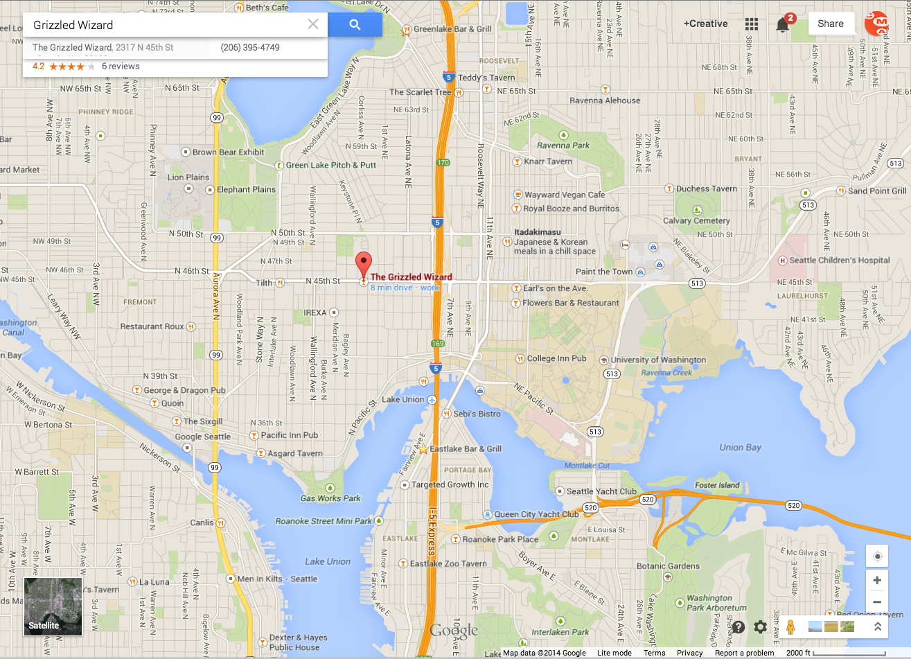
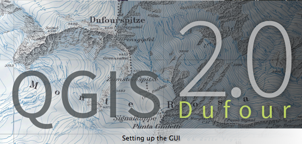
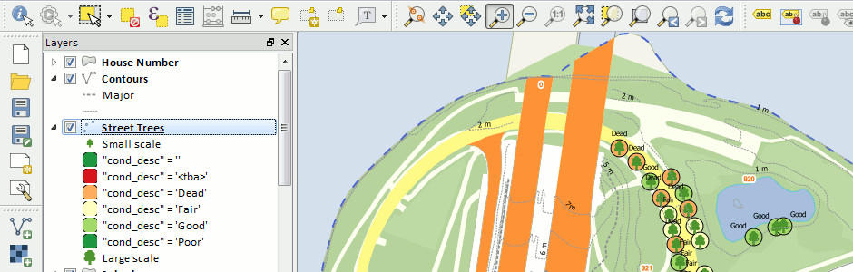
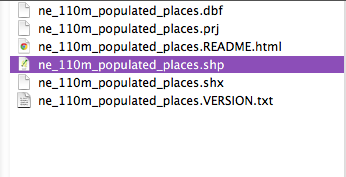
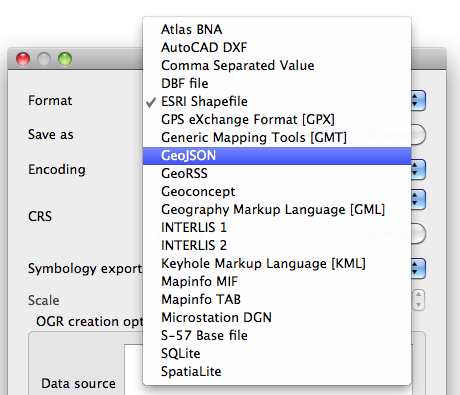

web maps!

open source web maps!
- access to the source code
- community driven
- following data standards
- updates, releases, bug fixes, documentation
connecting your data to the browser
data formats are different on the web
variables, arrays, databases
Introducing
GeoJSON
spatial javascript object derived from JSON
JavaScript Object Notation
Has a specific structure:
{
"type": "Feature",
"geometry": {
"type": "Point",
"coordinates": [125.6, 10.1]
},
"properties": {
"name": "Dinagat Islands"
}
}
check out
geojson.org
Shapefiles
to
GeoJSON
Remember when ______ talked about QGIS?
You can save your data as GeoJSON right there!

Put your hands in the air if you've used/heard of QGIS?
Or we can use a variety of other tools:
Example time!
converted to geojson through QGIS

take your standard shapefile
and convert to geojson

now you have a web-ready format to be eaten by a mapping library
Leaflet.js
Leaflet is a modern open-source JavaScript library for mobile-friendly interactive maps.
in an ideal world, we could just download a sweet set of files that get us running a leaflet map instantly...
there's a lot to do, with very little javascript
"BUT I LOVE JAVASCRIPT. GIVE ME MORE!"
you say?
d3.js
D3.js is a JavaScript library for manipulating documents based on data.
d3.geo
spatial extention of d3.js
projections,
thematic mapping,
twitter: @vancematthews
github: svmatthews